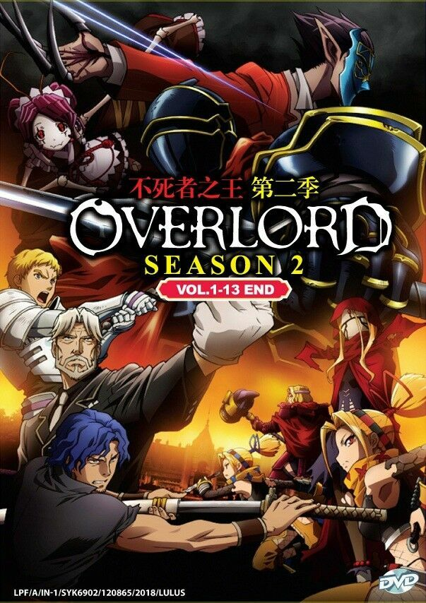
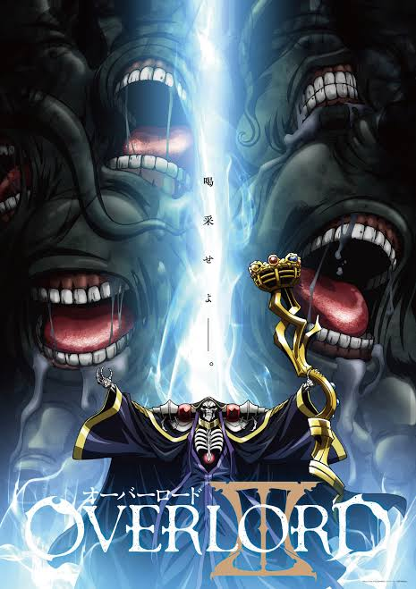

Season 1 (2015)
Momonga, now Ainz Ooal Gown, explores the New World with his loyal NPC guardians and begins carving out a place for his guild's legacy.

Season 2 (2018)
Ainz establishes himself as a ruler by conquering the Kingdom of E-Rantel and dealing with the Lizardmen tribes threatening his new territory.

Season 3 (2018)
Ainz wages war against the Kingdom of Re-Estize, cementing the Sorcerer Kingdom's dominance through overwhelming and ruthless force.